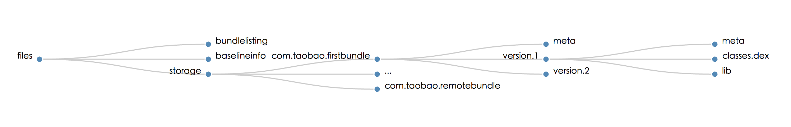

运行期文件结构
/data/data/pkgname/files/bundlelisting
之前打包构建时记录的bundleinfo信息（发生动态部署收文件会进行更新）
/data/data/pkgname/files/baselineinfo
存放动态部署后的版本变化内容，以及每次部署发生更新的bundle的版本，依赖等信息
/data/data/pkgname/files/storage
storage目录是bundle安装的目录，每个bundle的安装目录以bundle的packagename为文件夹名，首次启动后会安装到version.1目录下，目录中可能含有bundle的zip文件，dex文件以及native so等内容。如果bundle发生更新，则可能会有version.2、version.3 等目录，每次加载bundle的时候选取最高可用版本进行载入。考虑bundle的回滚功能和对空间占用的影响，目前容器内最多保留两个最近可用版本。 > 